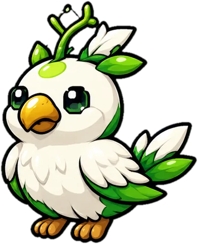

 Grass
Grass Wind
WindTap a stage to read its story.
Sprouquill is a rotund white-green chick with a fluffy round body, a short orange beak, and two tiny leaf-tipped wings tucked against its sides. A single bright green leaf-feather sprouts from its crown. It navigates the low tangles of the Bug Thicket by hopping rather than flying, its big eyes blinking rapidly as it monitors the constant insect traffic above. It chirps once whenever it spots something new, which in the Bug Thicket means it chirps approximately every four seconds.
Field note: Sprouquill's one-chirp-per-new-thing habit makes it an accidental census tool - researchers have mapped the Bug Thicket by tallying its chirp rate.
Bug Thicket. Sprouquill and its family are found in the Bug Thicket. See everyone who lives there.
Share a Bond Food that matches its types to become friends. Sprouquill loves:
A Bond Food is not a trick. It joins your spirit with the Kimuro's spirit, and only when it chooses you.
Print the Kimuro adventure packs: mazes, cards, a board game and Bond Mark medals.
See the printable packs